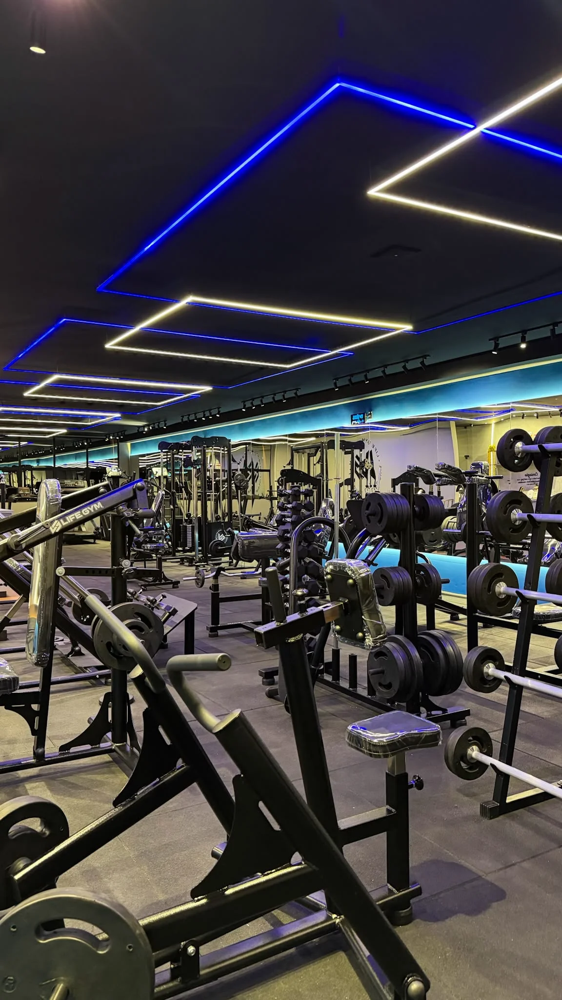
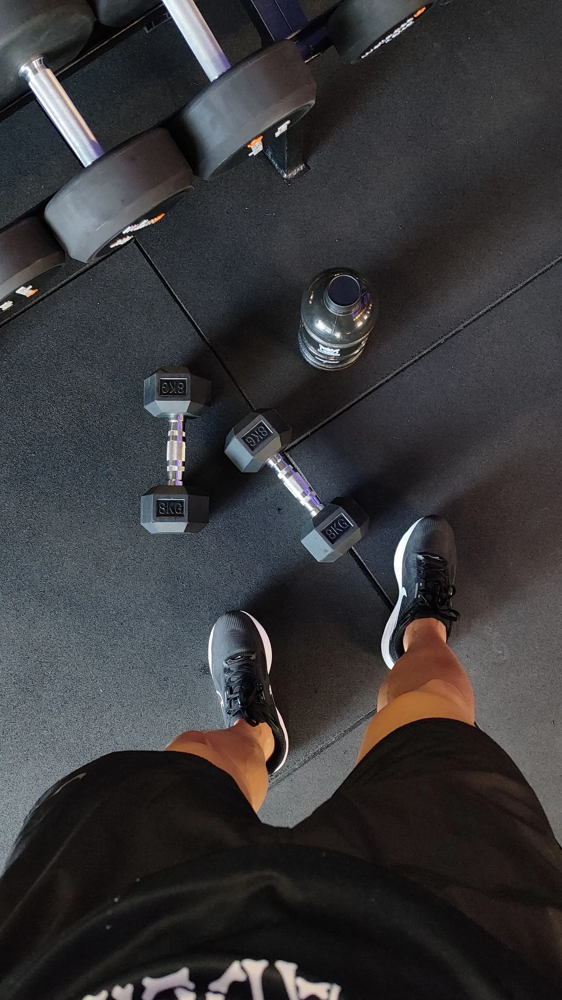

♧
01Gestão de alunos
Centralize cadastros e informações.
Conheça cada aluno, sem perder nenhum detalhe.
ACAna CostaHipertrofia · Treino AAtivo
PLPedro LimaCondicionamento · Treino BAtivo
Gerencie seus alunos, prescreva treinos e acompanhe resultados em uma plataforma feita para personal trainers.

Atendimento presencial, online e híbrido.
Da primeira avaliação ao próximo treino.
Uma rotina mais simples para você focar
no que faz de melhor.
Centralize cadastros e informações.
Conheça cada aluno, sem perder nenhum detalhe.
Exercícios, séries, repetições e orientações. Seu método, organizado em cada treino.
Visualize registros e acompanhe o progresso. Mais contexto para orientar o próximo passo.
Acompanhe mensalidades e pagamentos. Tenha clareza sobre as finanças do seu negócio.
Tenha mais controle sobre a rotina de atendimento e mais espaço para cuidar de cada aluno.
Mantenha o controle em cada movimento.
O cuidado do seu atendimento continua no celular. Um treino claro, acessível e sempre por perto.
Um fluxo simples para conectar o seu trabalho ao treino do aluno.
Reúna as informações de cada aluno e organize seu atendimento.
Transforme seu planejamento em orientações claras e acessíveis.
Consulte os registros e siga de perto a jornada dos seus alunos.

Conheça o TechFit e descubra como simplificar
sua rotina de personal trainer.